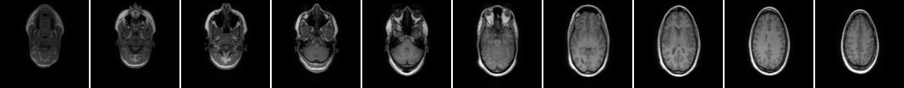
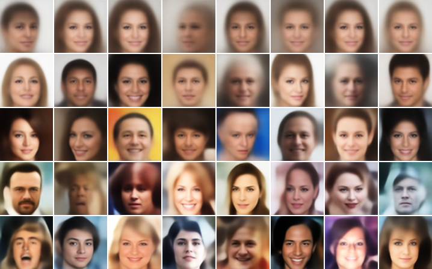
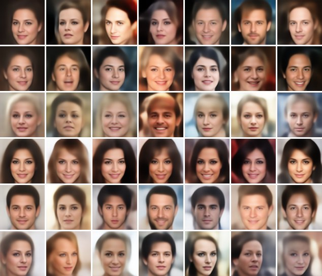

Experiments: Brains and Faces
Same network, same recipe, two very different worlds. Here is the full experimental record for both datasets, in the same format, including the cases where the models fail.
By the end of this chapter you will know
- exactly how each dataset was prepared and how every model was trained;
- how reconstruction quality changes with latent size on brains and on faces;
- where the models fail, and why faces need many more latent numbers than brains.
1.One protocol for everything
For the comparisons to mean anything, only one thing may change at a time. So all 39 models share the same encoder and decoder, optimiser, schedule, seed and stopping rule. Between models, only the latent layer (and, for VAEs, the KL weight β) changes.
| IXI brain MRI | CelebA faces | |
|---|---|---|
| images | T1 axial slices, 128×128, grayscale | aligned faces, 64×64, colour |
| split | by subject: 407 / 87 / 87 people 25,879 / 5,528 / 5,514 slices | official, by identity: 162,770 / 19,867 / 19,962 images |
| latent sizes | 2, 3, 4, 8, 16, 64, 128 | 2, 4, 8, 16, 64, 128 |
| models | AE · VAE β = 0.1 · VAE β = 1, all with the same 5-stage conv encoder/decoder (12–15 M parameters) | |
| training | ≤ 100 epochs, early stopping (patience 15) | ≤ 50 epochs, early stopping (patience 10) |
| augmentation | flip, ±10° rotation, ±5% zoom/shift, gamma | flip only (faces are already aligned) |
| metrics | MSE, PSNR, brain-only PSNR, SSIM, FID (reconstructions and samples), active latent units | |
2.Brain MRI (IXI)
Dataset and preprocessing
IXI is a public collection of MRI scans from 581 healthy adults (CC BY-SA 3.0). Each 3-D T1 volume is turned to a standard orientation and divided by its 99.5th-percentile intensity, so every value is between 0 and 1. I keep axial slices from 30% to 80% of the head height (every 2nd slice), drop near-empty ones, pad each slice to a square and resize to 128×128.
One test subject, from low in the head to the top
real
Reconstruction quality
IXI test metrics for every model
5,514 test slicesTraining curves (z = 16)
actual training logsFailure analysis: which slices are hardest?
Averages hide a lot. So let's sort all 5,514 test slices by how badly the AE (z = 16) reconstructs them, and look at the best, the median and the worst.
Best, median and worst reconstructions (z = 16)
real reconstructedThe pattern is very clear: every one of the worst slices comes from low in the head (30–34% height: eyes, sinuses, cerebellum), and the best ones come from near the top (70–76%). Low slices pack many small, high-contrast structures into the image, and a 16-number code can't describe them all, so the decoder smears them into a smooth average. High slices are mostly smooth tissue, which a blurry decoder handles well. If you used this model for anomaly detection, a normal low slice would look more "anomalous" than a normal high one, so error thresholds would have to depend on the slice level.
3.Faces (CelebA)
Dataset and preprocessing
CelebA has about 200,000 photos of 10,177 celebrities, already aligned so the eyes are in the same place. I take the standard centre crop (148×148) and resize to 64×64 colour, and use the official split, in which no identity appears in more than one part. Each photo also has 40 yes/no attributes (Male, Smiling, Eyeglasses, …), which I use only to colour latent plots, never for training.
Reconstruction quality
CelebA test metrics for every model
19,962 test imagesGenerated faces as the latent size grows (VAE β=0.1, same noise in every row)
generated
What is in the CelebA latent clusters? (VAE β=0.1, d = 128)
generated
4.Brains vs faces: what each extra number buys
PSNR gained over the 2-number model
test-set metricsA control experiment that didn't help
On CelebA, most best checkpoints were close to the last epoch, which looked like the models needed more training. So I retrained all 18 CelebA models for 100 epochs instead of 50. Every number moved by about ±0.1 dB and the runs early-stopped anyway. The "best epoch near the end" was just the cosine learning-rate schedule settling down, not under-training. I kept the 50-epoch models.
Key takeaways
- Same protocol on both datasets; only the latent layer and β change between models.
- The hardest brain slices are the low ones (eyes, sinuses, cerebellum): small structures don't survive a small code.
- Faces keep benefiting from more latent numbers far longer than brains do.
- More training wasn't the answer on CelebA; the schedule just looked like under-training.
References
- IXI dataset. brain-development.org/ixi-dataset (CC BY-SA 3.0).
- Liu, Luo, Wang, Tang (2015). Deep Learning Face Attributes in the Wild (CelebA). ICCV.
- Wang, Bovik, Sheikh, Simoncelli (2004). Image quality assessment: from error visibility to structural similarity (SSIM). IEEE TIP.
- Heusel et al. (2017). GANs Trained by a Two Time-Scale Update Rule Converge to a Local Nash Equilibrium (FID). NeurIPS.